Mar 5th, 2015
Reminder on OPCodes caches#
PHP is a scripting language, that by default will compile any file you ask it to run, obtain OPCodes from compilation, run them, and trash them away immediately. PHP has been designed like that : it "forgets" everything it's done in request R-1, when it comes to run request R.
On production servers, the PHP code is very unlikely to change between several requests, thus, the compilation step will always read the same source code, leading to the very exact same OPCode to be run. This is a big waste of time and resources, as the PHP compiler is invoked for every request, for every script.
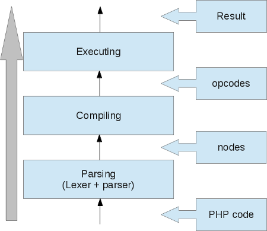
Knowing that compilation can really take a lot of time, OPCode cache extensions have been designed. Their main goal is to compile once and only once each PHP script, and cache the resulting OPCodes into shared memory, so that every other PHP worker of your production worker pool (usually using PHP-FPM) can make use of the OPCodes by reading them and executing then back.
The result is a massive boost in overall performance of the language, dividing time to run a script by a factor of at least 2 (very depend on the script), usually more than 2, as PHP now doesn't have to compile again and again the same PHP scripts.
The boost is higher as the application is more complex. If you take applications running tons of files, like framework based applications, or products like wordpress, you will experience a factor of 10-15 or so. This is because the PHP compiler is slow, and this is just a normal situation : a compiler is slow, whatever it is, because its work is to turn a syntax into another, trying to understand what you asked, and somehow to optimize the generated code for it to later run the fastest as possible ; so yes, compiling a PHP script is really slow and eats a lot of memory. Profilers like Blackfire allows you to know the compile time.
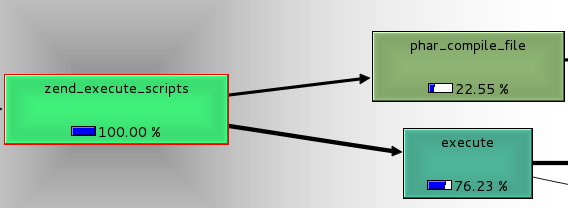
Introducing OPCache#
OPCache has been opensourced since 2013, and is bundled into PHP's source starting from PHP 5.5.0 It has thus become a standard for PHP OPcode cache solutions. There exists other solutions, such as XCache, APC, Eaccelerator and others. I will not talk about those other solutions, as I myself don't know them except APC : APC support has been discontinued in favor of OPCache. Short : if you were using APC before, please, use OPCache now. OPCache has become the real official recommanded OPCode cache solution by the developpers of PHP. You may still use other solutions if you want, however, never ever activate more than one OPCode cache extension at the same time : you will likely crash PHP.
Be aware that new development involving OPCache won't target PHP 5 branch, but PHP 7 branch which is the nowadays stable branch. This article will target OPCache for PHP 5 and PHP 7, so that you may spot the differences (which are not that big).
So OPCache is an extension, a zend_extension more precisely, which is shipped into the PHP source code, starting from PHP 5.5.0 (Pecl for others), and that must be activated through the normal php.ini process of activating an extension. For distros, please refer to your distribution manual to know how PHP and OPCache have been bundled.
Two features into one product#
OPCache is an extension which provides two main features :
- OPCodes caching
- OPCodes optimization
Because OPCache triggers the PHP compiler, to get OPCodes and cache them, it could use this step to optimize the OPCodes. Optimizations are basically about compiler optimizations, and share many concepts of this computer science discipline. OPCache optimizer is a multi pass compiler optimizer.
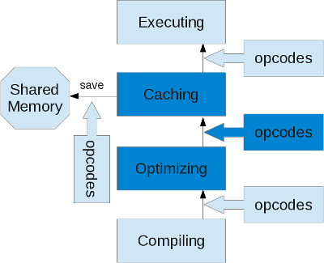
OPCache in deep#
Let's now see together how OPCache works internally. If you want to follow the code, you can fetch it from the PHP source code, here it is for PHP 7.0.
Unlike what you can think, OPCode caching is not a that hard concept to analyze and understand. You must have a good knowledge on how the Zend Engine works and has been designed, then you should start spotting places where the job can be done.
Shared memory models#
As you know, there exists many shared memory models under the different Operating Systems. Under modern Unixes, there exists several ways of sharing memory through processes, most commonly used are :
- System-V shm API
- POSIX API
- mmap API
- Unix socket API
OPCache is able to use the first three of them, as soon as your OS supports the layer. The INI setting opcache.preferred_memory_model allows you to explicitly select the memory model you want. If you leave the parameter to null value, OPCache will select the first model which works for your platform, iterating through its table :
static const zend_shared_memory_handler_entry handler_table[] = {
#ifdef USE_MMAP
{ "mmap", &zend_alloc_mmap_handlers },
#endif
#ifdef USE_SHM
{ "shm", &zend_alloc_shm_handlers },
#endif
#ifdef USE_SHM_OPEN
{ "posix", &zend_alloc_posix_handlers },
#endif
#ifdef ZEND_WIN32
{ "win32", &zend_alloc_win32_handlers },
#endif
{ NULL, NULL}
};So by default, mmap should be used. It's a nice memory model, mature and robust. However it is less informative to sysadmin that System-V SHM model is, and its ipcs and ipcrm commands.
As soon as OPCache starts (as soon as PHP starts), OPCache will try a shared memory model, and will allocate one big memory segment that it will then divide and manage on its side. However, it will never free this segment back, nor will it try to resize it.
OPCache allocates one segment of shared memory when PHP starts, once for all, and never frees it nor fragments it.
The size of the memory segment can be told using the opcache.memory_consumption INI setting (Megabytes). Size it big, don't hesitate to give space. Never ever run out of shared memory space, if you do, you will lock your processes, we'll get back to that later.
Size the shared memory segment according to your needs, don't forget that a production server dedicated to PHP processes may bundle several dozens of Gigabytes of memory, just for PHP. Having a 1Gb shared memory segment (or more) is not uncommon, it will depend on your needs, but if you use a modern application stack, aka framework based, with lots of dependencies etc... , then use at least 1Gb of shared memory.
The shared memory segment will be used for several things in OPCache :
- Script's datastructure caching, involving obviously OPCodes caching but not only
- Shared interned strings buffer
- Cached scripts HashTable
- Global OPCache shared memory state
So remember, the shared memory segment size will not only contain raw OPCodes, but other things needed for OPCache internals. Measure on your side and size it accordingly.

OPCodes caching#
Here we go to detail how the caching mechanism works.
The overall idea is to copy into shared memory (shm) every pointer data that won't change from request to request, aka immutable things. And there are many of them. After, once loading back the same script : restore every pointer data from shared memory to standard process memory, tied to the current request. When the PHP compiler is working, it uses Zend Memory Manager (ZMM) to allocate every pointer. This kind of memory used is request bound as ZMM will automaticaly attempt to free those pointers as soon as the current request finishes. Also, those pointers are allocated from the current process' heap, that is this is some privately mapped memory and thus can't be shared with other PHP processes. Hence, OPCache's job is to browse every structure returned by the PHP compiler, and not leave one single pointer allocated onto this pool, but copy it into a shared memory allocated pool. And here we talk about compile time, whatever has been allocated by the compiler, is assumed to be immutable. Non-immutable data will be created at runtime by the Zend Virtual Machine, so it is safe to save everything that the Zend Compiler created, into shared memory. Examples of such created things : functions and classes, those are functions' name pointers, functions' OPArray pointers, classes' constants, classes's declared variable names and eventually their default content... There are really many things that are created in memory by the PHP compiler.
Such a memory model is used to prevent locks at maximum. We'll go back to locks in a later subject, but basically, OPCache does its job all at once, before runtime, so that during the runtime of the script, OPCache has nothing more to do : volatile data will be created on the classical process heap using ZMM, and immutable data would have been restored from shared memory.
So, OPCache hooks into the compiler, and replaces the structure this latter should fill-in while compiling PHP scripts, by its own.
It then makes the compiler fills a persistent_script structure, instead of it filling directly the Zend Engine tables and internal structures.
Here is a persistent_script structure :
typedef struct _zend_persistent_script {
ulong hash_value;
char *full_path; /* full real path with resolved symlinks */
unsigned int full_path_len;
zend_op_array main_op_array;
HashTable function_table;
HashTable class_table;
long compiler_halt_offset; /* position of __HALT_COMPILER or -1 */
int ping_auto_globals_mask; /* which autoglobals are used by the script */
accel_time_t timestamp; /* the script modification time */
zend_bool corrupted;
#if ZEND_EXTENSION_API_NO < PHP_5_3_X_API_NO
zend_uint early_binding; /* the linked list of delayed declarations */
#endif
void *mem; /* shared memory area used by script structures */
size_t size; /* size of used shared memory */
/* All entries that shouldn't be counted in the ADLER32
* checksum must be declared in this struct
*/
struct zend_persistent_script_dynamic_members {
time_t last_used;
ulong hits;
unsigned int memory_consumption;
unsigned int checksum;
time_t revalidate;
} dynamic_members;
} zend_persistent_script;And here is how OPCache replaces the compiler structure by the persistent_script ones, simple function pointers switch :
new_persistent_script = create_persistent_script();
/* Save the original values for the op_array, function table and class table */
orig_active_op_array = CG(active_op_array);
orig_function_table = CG(function_table);
orig_class_table = CG(class_table);
orig_user_error_handler = EG(user_error_handler);
/* Override them with ours */
CG(function_table) = &ZCG(function_table);
EG(class_table) = CG(class_table) = &new_persistent_script->class_table;
EG(user_error_handler) = NULL;
zend_try {
orig_compiler_options = CG(compiler_options);
/* Configure the compiler */
CG(compiler_options) |= ZEND_COMPILE_HANDLE_OP_ARRAY;
CG(compiler_options) |= ZEND_COMPILE_IGNORE_INTERNAL_CLASSES;
CG(compiler_options) |= ZEND_COMPILE_DELAYED_BINDING;
CG(compiler_options) |= ZEND_COMPILE_NO_CONSTANT_SUBSTITUTION;
op_array = *op_array_p = accelerator_orig_compile_file(file_handle, type TSRMLS_CC); /* Trigger PHP compiler */
CG(compiler_options) = orig_compiler_options;
} zend_catch {
op_array = NULL;
do_bailout = 1;
CG(compiler_options) = orig_compiler_options;
} zend_end_try();
/* Restore originals */
CG(active_op_array) = orig_active_op_array;
CG(function_table) = orig_function_table;
EG(class_table) = CG(class_table) = orig_class_table;
EG(user_error_handler) = orig_user_error_handler;As we can see, the PHP compiler is fully isolated and disconnected from the tables it usually fills : it will now fill the persistent_script structures. Then OPCache will have to browse those structures, and replace request allocated pointers to shm ones. OPCache is interested in :
- The script functions
- The script classes
- The script main OPArray
- The script path
- The script structure itself
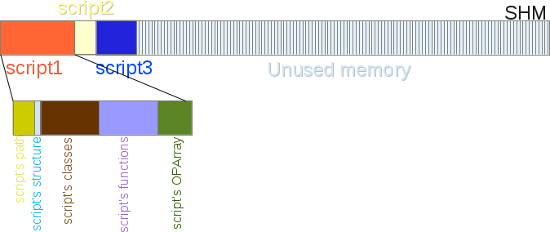
The compiler is also told some options to disable some optimizations it does, like ZEND_COMPILE_NO_CONSTANT_SUBSTITUTION and ZEND_COMPILE_DELAYED_BINDING. That would add more work to OPCache. Remember that OPCache hooks into the Zend Engine, it is not a source code patch.
Now that we have a persitent_script structure, we must cache its informations. Remember that the PHP Compiler has filled-in our structures, but it allocated the memory behind this using the Zend Memory Manager : this memory will be freed at the end of the current request. We then need to browse this memory, and copy all of it into the shared memory segment, so that the informations we just gathered will now persist through several requests and won't need to be recomputed every time.
The process is as follow :
- Take the PHP script to cache, and compute every variable data size (every pointer target)
- Reserve into already allocated shared memory one big block of this precise size
- Iterate over the PHP script variable structures, and for each variable-data pointer target, copy it into the just-allocated shared memory block
- Do the exact opposite for script loading, when this comes to play.
So OPCache is clever about shared memory, and will not fragment it by freeing it and compacting it. For every script, it computes the exact size this script needs to store informations into shared memory, and then copies the data into the segment. The memory is never freed nor given back to the OS by OPCache , thus the memory is perfectly aligned and never fragmented. This gives a big boost in performance of shared memory, as there is no linked-list or BTree to store and traverse when managing memory that can be freed (like malloc/free do). OPcache keeps storing things into the shared memory segment, and when the data become stale (because of script revalidation) : it does not free the buffers but mark them as "wasted". When the max wasted percentage is reached, OPCache triggers a restart. This model is very different from the old APC extension, for example, and has the big advantage of providing the same performances as time runs, because the memory buffer from SHM is never managed (freed, compacted, etc...), memory management operations are trully technically stuff which brings nothing to functionnalities, but performance penalty as they run. OPCache has been designed with highest possible performance in mind for the PHP environment runtime, not touching back the shared memory segment provides as well a very good rate of CPU caches hits (especially L1 and L2, as OPCache also aligns the memory pointers for them to better find a hit in an L1/L2 line).
Caching a script thus involves -as a first step- computing the exact size of its data. Here is the algorithm :
uint zend_accel_script_persist_calc(zend_persistent_script *new_persistent_script, char *key, unsigned int key_length TSRMLS_DC)
{
START_SIZE();
ADD_SIZE(zend_hash_persist_calc(&new_persistent_script->function_table, (int (*)(void* TSRMLS_DC)) zend_persist_op_array_calc, sizeof(zend_op_array) TSRMLS_CC));
ADD_SIZE(zend_accel_persist_class_table_calc(&new_persistent_script->class_table TSRMLS_CC));
ADD_SIZE(zend_persist_op_array_calc(&new_persistent_script->main_op_array TSRMLS_CC));
ADD_DUP_SIZE(key, key_length + 1);
ADD_DUP_SIZE(new_persistent_script->full_path, new_persistent_script->full_path_len + 1);
ADD_DUP_SIZE(new_persistent_script, sizeof(zend_persistent_script));
RETURN_SIZE();
}I repeat : what we have to cache are :
- The script functions
- The script classes
- The script main OPArray
- The script path
- The script structure itself
For functions, classes and OPArray, the iterating algorithm is deep searching : it caches every pointer data. For example for the functions in PHP 5, we must copy into shared memory (shm) :
- The functions HashTable
- The functions HashTable buckets table (Bucket **)
- The functions HashTable buckets (Bucket *)
- The functions HashTable buckets' key (char *)
- The functions HashTable buckets' data pointer (void *)
- The functions HashTable buckets' data (*)
- The functions OPArray
- The OPArray filename (char *)
- The OPArray literals (names (char ) and values (zval ))
- The OPArray OPCodes (zend_op *)
- The OPArray function name (char *)
- The OPArray arg_infos (zend_arg_info , and the name and class name as both char )
- The OPArray break-continue array (zend_brk_cont_element *)
- The OPArray static variables (Full deep HashTable and zval *)
- The OPArray doc comments (char *)
- The OPArray try-catch array (zend_try_catch_element *)
- The OPArray compiled variables (zend_compiled_variable *)
I did not detail all, and this changes for PHP 7 as the structures (such as the hashtable) are different. The idea is as I expressed it : copy in shared memory every pointer data. As deep copies may involve recursive structures, OPCache uses a translate table for pointer storage : everytime it copies a pointer from regular request-bound memory to shared memory, it saves the association between the old pointer address, and the new pointer address. The copy process, before copying, looks up this translate table to know if it has already copied the data, if so, it reuses the old pointer data so that it never duplicates any pointer data :
void *_zend_shared_memdup(void *source, size_t size, zend_bool free_source TSRMLS_DC)
{
void **old_p, *retval;
if (zend_hash_index_find(&xlat_table, (ulong)source, (void **)&old_p) == SUCCESS) {
/* we already duplicated this pointer */
return *old_p;
}
retval = ZCG(mem);;
ZCG(mem) = (void*)(((char*)ZCG(mem)) + ZEND_ALIGNED_SIZE(size));
memcpy(retval, source, size);
if (free_source) {
interned_efree((char*)source);
}
zend_shared_alloc_register_xlat_entry(source, retval);
return retval;
}ZCG(mem) represents the fixed-size shared memory segment and is filled-in as elements are added. It then has already been allocated, there is no need to allocate memory on each copy (which would have been less performant), but simply fill-in the memory, and move forward the pointer address border.
We detailed the script caching algorithm, which role is to take any request-bound heap memory pointer and data and duplicate it into shared memory, if not already copied.
The loading algorithm does the exact opposite : it gets the persistent_script back from shared memory and browse every of its dynamic structures to duplicate every shared pointer to a request-bound allocated pointer.
The script is then ready to be run by the Zend Engine Executor, as it now doesn't embed any shared pointer address (which would lead to massive bugs of one script modifing the structure of its brother). The Zend Engine is tricked (hooked by OPCache) : it has seen nothing of the pointers replacement happening before the execution happens.
This process of copying from regular memory to shared memory (cache script), or the opposite (load script), is highly optimized, and even if it involves many memory copies or hash lookups, which are not really nice in term of performance, we are way faster than triggering the PHP compiler every time.
Sharing interned strings#
Interned strings is a nice memory optimisation that's been added to PHP 5.4. This may feel like some comonsense : every time PHP meets an immutable string (a char*), it stores it into a special buffer and reuses the pointer for every occurence of this same string next to come. You may learn more about interned strings from this article. Interned strings are about immutable strings, and thus are nearly exclusively used into the PHP compiler.
Interned strings work like this :
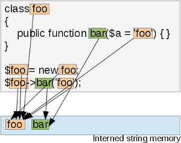
The same instance of a string is shared to every pointer. But there still is a problem with that : this interned string buffer is a per-process buffer, it is managed by the PHP compiler mainly. That means that in a PHP-FPM pool, every PHP worker will store its own copy of this buffer, something like this :
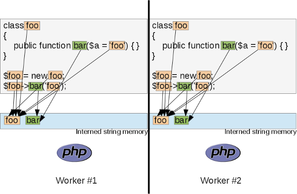
This leads to a massive waste of memory, especially in case you have tons of workers (you're likely to have), and you use very big strings in your PHP code (tip: PHP's annotation comments are strings). What OPCache takes care of, is sharing this buffer between every PHP worker of a pool. Something like this :

Et voila! OPCache shares the interned string buffers of all the PHP-FPM worker of the same pools, and uses its shm segment to store those. Thus, you need to size the shm segment according to your interned strings usage as well. Also, OPCache allows you to tune the interned strings shm usage using opcache.interned_strings_buffer INI setting. Monitor OPCache and once more : make sure you have enough memory. However here, if you run out of interned strings memory space (opcache.interned_strings_buffer setting is too low), OPCache will not trigger a restart, because it still has some shm available, only interned strings buffer is full, which is not blocking to continue processing request, you'll simply end up having some strings interned and shared, and some other that use PHP worker's memory. I don't recommand that for performance.
Read your logs, when you run out of interned string memory, OPCache warns you :
if (ZCSG(interned_strings_top) + ZEND_MM_ALIGNED_SIZE(sizeof(Bucket) + nKeyLength) >=
ZCSG(interned_strings_end)) {
/* no memory, return the same non-interned string */
zend_accel_error(ACCEL_LOG_WARNING, "Interned string buffer overflow");
return arKey;
}Interned strings are about every piece of immutable string the PHP compiler is going to meet while doing its job : variable names, "php strings", function names, class names... PHP comments, nowadays used and called "annotations", are strings as well, and they are usually huge strings, that will eat most of your interned strings buffer. Think about them as well.
The locking mechanism#
As soon as we talk about shared memory (shm), we must talk about memory locking mecanisms. The base line is simple : every PHP process that is willing to write into shared memory will lock every other process willing to write into shared memory as well. So the critical section is done on write operations, and not read operations. You may happen to have 150 PHP processes reading the shared memory, only one of them may write into the shm at the same time, write operation doesn't prevent read operation but another write operation.
So, there should be no dead-lock in OPCache, until you don't prime your cache smoothly . If, after your code deployment, you open your webserver to trafic, then there will be a massive rush on your scripts to compile and cache them, and as the cache write-to-shm operation is done under exclusive lock, you will probably lock every processes once the first lucky one has obtained a lock to write. When this latter will release the lock, every process waiting for it will then see that the file they just compiled is already stored into shm , and then they will trash the compilation result to load it from shm. This is a big waste of resources.
/* exclusive lock */
zend_shared_alloc_lock(TSRMLS_C);
/* Check if we still need to put the file into the cache (may be it was
* already stored by another process. This final check is done under
* exclusive lock) */
bucket = zend_accel_hash_find_entry(&ZCSG(hash), new_persistent_script->full_path, new_persistent_script->full_path_len + 1);
if (bucket) {
zend_persistent_script *existing_persistent_script = (zend_persistent_script *)bucket->data;
if (!existing_persistent_script->corrupted) {
if (!ZCG(accel_directives).revalidate_path &&
(!ZCG(accel_directives).validate_timestamps ||
(new_persistent_script->timestamp == existing_persistent_script->timestamp))) {
zend_accel_add_key(key, key_length, bucket TSRMLS_CC);
}
zend_shared_alloc_unlock(TSRMLS_C);
return new_persistent_script;
}
}What you should do, is cut off your server from external webtraffic, deploy your new code, curl some of your most heavy URLs, so that your curl requests will smoothly prime the shm. When you think you are done with the big majority of your scripts, you may now open your webserver to traffic, so that now this one will massively read shm, which is a lock-free operation. Sure there may still be some little scripts not compiled yet, but as soon as they are uncommon, there is no pressure on the write lock.
What you should avoid, is writing PHP files at runtime, and then make use of them. For the exact same reason : as soon as you write a new PHP file onto your production server documentroot, and you make use of it, chances are that it will be rushed by thousands of PHP workers trying to compile and cache it into shm : you will lock. Those dynamically generated PHP files should be added to the OPCache blacklist, using the opcache.blacklist-filename INI setting (which accepts glob patterns).
Technically speaking, the lock mecanism is not very strong, but it works on many flavors of Unix : it uses the famous fcntl() call
void zend_shared_alloc_lock(TSRMLS_D)
{
while (1) {
if (fcntl(lock_file, F_SETLKW, &mem_write_lock) == -1) {
if (errno == EINTR) {
continue;
}
zend_accel_error(ACCEL_LOG_ERROR, "Cannot create lock - %s (%d)", strerror(errno), errno);
}
break;
}
ZCG(locked) = 1;
zend_hash_init(&xlat_table, 100, NULL, NULL, 1);
}I here talked about memory locks happening on normal process : nothing bad, if you take care, no more than one PHP process should be writing to the shm at the same time, so you won't suffer from any lock waiting times.
There exists however another lock that you should prevent from happening : the memory exhausted lock. This is the next chapter
Understanding the OPCache memory consumption#
So I remind you with facts :
- OPCache creates one unique segment of shared memory, once for all, at PHP startup (when you start PHP-FPM)
- OPCache never frees some shm into this segment, the segment is allocated at startup, then filled-in according to the needs
- OPCache locks shm when it writes into it
- shm is used for several purposes :
- Script's datastructure caching, involving obviously OPCodes caching but not only
- Shared interned strings buffer
- Cached scripts HashTable
- Global OPCache shared memory state
If you use validation of your scripts, OPCache will check their modification date at every access (not every, check opcache.revalidate_freq INI setting), and will have a hint of wheither the file is fresh or stale. This check is cached : it is not costly as opposed to what you could think. OPCache comes into the scene some time after PHP, and PHP has already stat()ed the file : OPCache just reuses this information and does not issue a costly stat() call to the filesystem again for its own use.
If you use timestamp validation, via opcache.validate_timestamps and opcache.revalidate_freq, and your file has effectively changed, then OPCache will simply invalidate it, and flag all of its shm data as invalid. It will not free anything from shm. OPCache flags the shm parts as "wasted". Only when OPCache runs out of shm on an allocation AND when wasted memory reaches the opcache.max_wasted_percentage INI setting value, OPCache will trigger a full restart, which is something you must absolutely prevent from happening No other scenario.
/* Calculate the required memory size */
memory_used = zend_accel_script_persist_calc(new_persistent_script, key, key_length TSRMLS_CC);
/* Allocate shared memory */
ZCG(mem) = zend_shared_alloc(memory_used);
if (!ZCG(mem)) {
zend_accel_schedule_restart_if_necessary(ACCEL_RESTART_OOM TSRMLS_CC);
zend_shared_alloc_unlock(TSRMLS_C);
return new_persistent_script;
}The picture above details what your shm segment could look like after some time has passed and some scripts have changed. The changed scripts' memory has been marked as "wasted", and OPCache will simply now ignore those memory areas, as well as it will recompile your changed scripts and create a new memory segment for their informations.
When enough wasted memory is reached, a restart will happen, OPCache will then lock shm, reset the shm segment (empty it entirely), and release the lock. This will let your server in a situation like if it has just started : every PHP worker is going to stress the lock now, because every worker will try to compile some files : your web server will now suffer from a very poor performance because of locks. The more the load, the less performance, this is unfortunately the rule with locks. So your server may really suffer for long seconds now.
Never run out of shared memory
More generally, what you should do is disable script modification tracking on production server, that way you are sure the cache will never trigger a restart (this is not entirely true as OPCache may still run out of persistent script key space, we'll see that later). A classic deployment should follow the rules :
- take out the server from load (disconnect it from your load balancer)
- empty opcache (call
opcache_reset()) or directly shut down FPM (better, we'll detail in few minutes) - deploy a new version of your application at once
- restart your FPM pool if needed and prime your new cache smoothly by triggering curl request on major application entry points
- open back your server to traffic
All this can be done with a 50 line shell script that can be turned very robust playing with lsof and kill in case some hard requests don't seem to finish. Bring your Unix knowledge ;-)
You can even see what happens using one of the numerous GUI frontends for OPCache available anywhere on the web and Github, they all make use of the opcache_get_status() function:
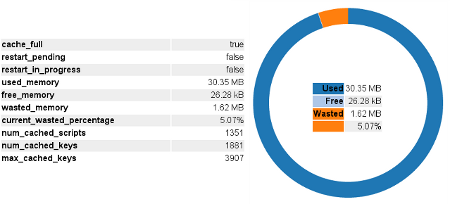
This is not the full story though, there is another thing to clearly keep in mind : cache keys.
When OPCache stores a cached script into SHM, it stores its into a HashTable, to be able to find the script back after. But it has to choose a key to index the HashTable. What index/key does OPCache use to achieve this goal ? This highly depends on both the configuration, and the way your app has been designed.
Normally, OPCache resolves the full path to the script, but take care as it uses the PHP's realpath cache and you may suffer from it. If you change your documentroot using a symlink, put opcache.revalidate_path to 1 and empty your realpath cache (which may be hard to do as it is bound to the PHP worker process handling the current request).
So OPCache resolves the path to the file, and when resolved, it uses the realpath string as cache key for the script, and that's all, assuming you have opcache.revalidate_path INI setting turned to 1. If not, OPCache will also use the unresolved path as a cache key, and that will lead to problems if you were using symlinks, because if you then change the symlink target, OPCache will not notice it, as it will still use the unresolved path as key to find the old targetted script (this is to save a symlink resolution call).
By turning opcache.use_cwd to 1, you tell OPCache to prepend the cwd to every key, in case you use relative paths to include your files, like require_once "./foo.php";. I suggest, if you use relative paths and host several applications on the same PHP instance (which you shouldn't do), to always put opcache.use_cwd to 1. Also, if you happen to play with symlinks, turn opcache.revalidate_path to 1. But even with those settings on, you will suffer from PHP's realpath cache, and you may change the www symlink to another target, it won't be noticed by OPCache, even if you empty the cache by using opcache_reset().
Because of PHP's realpath cache, you may experience problems if using symlinks to handle your documentroot for deployment. Turn opcache.use_cwd and opcache.revalidate_path to 1, but even with those settings, bad symlink resolutions may happen, this is because PHP answers OPCache realpath resolution requests with a wrong answer, comming from its realpath_cache mechanism.
If you want to be extra safe in your deployment, the first option is to not use symlinks to manage your documentroot. If not, then use a double FPM pool, and use a FastCGI load balancer to balance between the two pools when deploying. Lighttpd and Nginx have this feature enabled by default as far as I remember :
- take out the server from load (disconnect it from your load balancer)
- shut down FPM, you will kill PHP (and then OPCache) and will be extra safe especially about PHP's realpath cache, which may trick you. This latter will be cleared if you shut down FPM. Monitor the eventual workers that may be stuck, and kill them if necessary.
- deploy a new version of your application at once
- restart your FPM pool. Don't forget to prime your new cache smoothly by triggering curl requests on major application entry points before
- open back your server to traffic
If you don't want to take your server out of the balancer, what can be done then, is :
- Deploy your new code into another directory, as your PHP server has one FPM pool still active and serving production requests
- Start another FPM pool, listening on another port, while still having the first FPM pool active and serving production requests
- Now you have two FPM pools, one hot and working, one idle, waiting to be bound to requests
- Change your documentroot symlink target to target the new deploy path, and immediately after, stop the first FPM pool. If you told your webserver about your two pools, it should notice the first pool is dying, and should load balance traffic to the new pool now, with no traffic interruption nor failing requests. The second pool will then be triggered, will resolve the new docroot symlink (as it is fresh and has a cleared realpath cache), and serve your new content. This clearly works, I used that on production servers many times, a ~80 lines well written shell script can take care of all this job.
So depending on the settings, one unique script may lead to several keys computed by opcache. But the key store is not infinite : it is also allocated into shared memory, and may get full, in which case even if there is still lot of room into the shm, because the persistent script hashtable is full, OPCache will behave like if it had no more memory, and will trigger a restart for next requests.
You always should monitor the number of keys in the key store, for it never to be full.
OPCache gives you this information with the use of opcache_get_status(), a function the different GUIs rely on. The num_cached_keys dimension returned by this function gives the info. You should preconfigure the number of keys, as a hint, using opcache.max_accelerated_files INI setting. Take care as the name suggests a number of files, in fact it is the number of keys that OPCache will compute, and as we've seen, one file may lead to several keys beeing computed. Monitor it, and use the right number. Avoid using relative paths in require_once statements, it makes OPCache generate more keys. Using an autoloader is recommanded, as this one, if well configured, will always issue include_once calls with full paths, and not relative ones.
OPCache preallocates the HashTable to store future persistent scripts when it starts (when PHP starts), and never tries to resize it. If it gets full, it will then trigger a restart. This is done for performance reasons.
So this is why you may see a num_cached_scripts dimension which is different from the num_cached_keys dimension, from OPcache status report. Only the num_cached_keys info is relevant, if it reaches max_cached_keys, you'll be in trouble with a restart pending.
Do not forget that you can understand what happens by lowering OPCache's log level (opcache.log_verbosity_level INI). It tells you if it runs out of memory, and which kind of OOM (OutOfMemory) error it generated : if it is related to the shm beeing full, or if it is the keys Hashtable which is full.
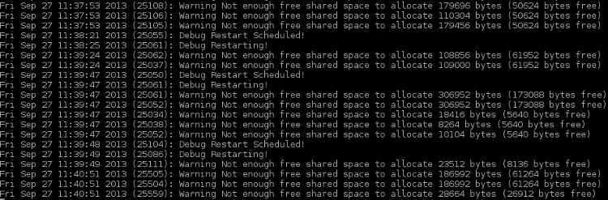
static void zend_accel_add_key(char *key, unsigned int key_length, zend_accel_hash_entry *bucket TSRMLS_DC)
{
if (!zend_accel_hash_find(&ZCSG(hash), key, key_length + 1)) {
if (zend_accel_hash_is_full(&ZCSG(hash))) {
zend_accel_error(ACCEL_LOG_DEBUG, "No more entries in hash table!");
ZSMMG(memory_exhausted) = 1;
zend_accel_schedule_restart_if_necessary(ACCEL_RESTART_HASH TSRMLS_CC);
} else {
char *new_key = zend_shared_alloc(key_length + 1);
if (new_key) {
memcpy(new_key, key, key_length + 1);
if (zend_accel_hash_update(&ZCSG(hash), new_key, key_length + 1, 1, bucket)) {
zend_accel_error(ACCEL_LOG_INFO, "Added key '%s'", new_key);
}
} else {
zend_accel_schedule_restart_if_necessary(ACCEL_RESTART_OOM TSRMLS_CC);
}
}
}
}So, to conclude about memory usage, here is the picture :
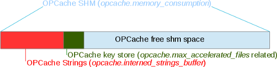
When you start PHP, you start OPCache, it allocates immediately opcache.memory_consumption Megabytes of shared memory (shm) from the OS. It then starts using this space, and stores into it the interned strings buffer (opcache.interned_strings_buffer). After that, it preallocates the HashTable for future persistent scripts and their keys to be stored. The space used depends on the opcache.max_accelerated_files.
Now, a part of the shm is used by OPCache internals, and the non-occupied space left is dedicated to you : to your scripts datastructures. This (actually free) memory segment will then be filled in, and as your scripts will change and OPCache will recompile them (assuming you told it to), the space will slowly become "wasted"; except if you tell OPCache not to recompile changed scripts (recommanded).
That may look like something like that :
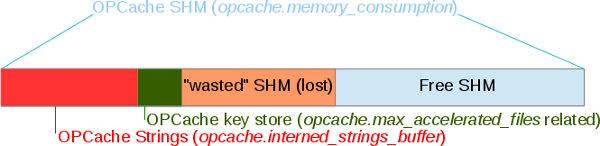
If persistent scripts HashTable becomes full, or if free SHM runs out : OPCache will trigger a restart (which you'd want to prevent absolutely).
Configuring OPCache#
If you use a framework based application, like a Symfony based application, I strongly suggest :
- you turn off revalidation mechanism on production (turn opcache.validate_timestamps to 0)
- you deploy using a full new runtime of your scripts, this is the case with Symfony applications
- you size correctly your buffers
- opcache.memory_consumption, the most important
- opcache.interned_strings_buffer , monitor your usage, and size accordingly, take care if you tell OPCache to save comments, which you will likely do if you use PHP "annotations" (opcache.save_comments = 1), those are strings, big strings, that will eat your interned strings buffer
- opcache.max_accelerated_files , numbers of keys to preallocate, once more : monitor and size accordingly
- You turn off opcache.opcache.revalidate_path and opcache.use_cwd. That will save some key space
- You turn on opcache.enable_file_override , this will accelerate the autoloader
- You fill-in opcache.blacklist_filename list with the script names you are likely to generate during runtime; shouldn't be too many of them anyway
- You turn off opcache.consistency_checks, this basically checks a control sum on your scripts, that eats perf
With those settings, your memory should never get wasted, then opcache.max_wasted_percentage is not very useful in this case. With those settings, you'll need to turn off your main FPM instance when deploying. You may play with several FPM pools to prevent service downtime, like explained earlier.
That should be enough.
OPCache compiler's optimizer#
Introducing#
So we talked about caching OPCodes into shm and loading them back later. Just before caching them, OPCache may also run optimizer passes. To fully understand the optimizer, you have to have a good knowledge of how the Zend VM Executor works. Also, you may bring your compiler knowledge, if you are very new to such concepts, perhaps starting reading some articles on the subject may help ? Or at least the mandatory-reading Dragon Book ? Anyway I'll try to make the subject understandable and fun to read.
Basically, the optimizer is given the whole OPArray structure, and may now browse it, find flaws, and fix them. But as we are analyzing OPCodes at compile time, we have no clue at all on everything tied to a "PHP variable". Basically, we don't know yet what will be stored in any IS_VAR or IS_CV operand, but only in IS_CONST or sometimes in IS_TMP_VAR. Like in any compiler for every languages : we must create the most optimized structure to be run at runtime, so that the runtime will be the fastest as possible.
OPCache optimizer can optimize a lot of things in IS_CONST; We can also replace some OPCodes by others (more optimized at runtime), we also find and trash dead code branches by using a CFG (control flow graph) analysis, but we don't unroll loops, or process to loop invariant motions as such optimizations are hard to apply to PHP. We also have other possibilities related to PHP internals : we may change the way classes are bound to optimize a bit the process in some specific cases, but we have absolutely not the possibility to do some cross file optimizations, because OPCache plays with OPArrays coming from file compilation (among other functions' OPArrays), and there is a total isolation of those OPArrays. PHP has never been built on a cross file based VM : the Virtual Machine and the language is file bound : when compiling a file, we have absolutely no information about the files that already got compiled, and those to come next. We then must try to optimize on a file-by-file basis, and must not assume for example that class A will be present in the future, if it is not at the moment. This is very different from Java or C++ that compile using compilation units and allowing cross-file optimizations; PHP simply won't do that, it's not been designed like that.
The PHP compiler acts on a file basis and has no shared state through file compilations, it doesn't compile a project in its whole, but a file, followed by others. There is no room for cross file optimizations.
OPCache optimization passes can be enabled on a case-by-case basis, using the INI setting opcache.optimization_level. It should represent a mask for optimizations you'd like to see enabled, based on their binary values :
/* zend_optimizer.h */
#define ZEND_OPTIMIZER_PASS_1 (1<<0) /* CSE, STRING construction */
#define ZEND_OPTIMIZER_PASS_2 (1<<1) /* Constant conversion and jumps */
#define ZEND_OPTIMIZER_PASS_3 (1<<2) /* ++, +=, series of jumps */
#define ZEND_OPTIMIZER_PASS_4 (1<<3) /* INIT_FCALL_BY_NAME -> DO_FCALL */
#define ZEND_OPTIMIZER_PASS_5 (1<<4) /* CFG based optimization */
#define ZEND_OPTIMIZER_PASS_6 (1<<5)
#define ZEND_OPTIMIZER_PASS_7 (1<<6)
#define ZEND_OPTIMIZER_PASS_8 (1<<7)
#define ZEND_OPTIMIZER_PASS_9 (1<<8) /* TMP VAR usage */
#define ZEND_OPTIMIZER_PASS_10 (1<<9) /* NOP removal */
#define ZEND_OPTIMIZER_PASS_11 (1<<10) /* Merge equal constants */
#define ZEND_OPTIMIZER_PASS_12 (1<<11) /* Adjust used stack */
#define ZEND_OPTIMIZER_PASS_13 (1<<12)
#define ZEND_OPTIMIZER_PASS_14 (1<<13)
#define ZEND_OPTIMIZER_PASS_15 (1<<14) /* Collect constants */
#define ZEND_OPTIMIZER_ALL_PASSES 0xFFFFFFFF
#define DEFAULT_OPTIMIZATION_LEVEL "0xFFFFBFFF"Known constant statements and branch trashing#
Note that many compile-time known constant statements are NOT computed by the compiler but by OPCache, for PHP 5. In PHP 7, those are computed in the compiler.
Here we go with examples :
if (false) {
echo "foo";
} else {
echo "bar";
}This leads in classical compilation to :
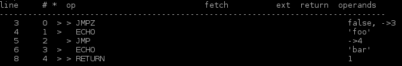
And optimized compilation :
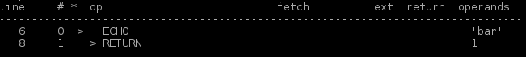
As we can see, the dead code in the if(false) branch has been trashed, the Zend VM executor will then simply have to run a ZEND_ECHO OPcode. We then saved some memory, because we threw away some OPCodes, and we may save a little bit of CPU cycles at runtime as well.
I recall you that we cannot know the content of any variable yet, as we are still at compile time (we are between compilation and execution). A code with an IS_CV operand instead of IS_CONST, could not have been optimized :
/* That cant be optimized, what's in $a ? */
if ($a) {
echo "foo";
} else {
echo "bar";
}Let's take another example so that you see the differences between PHP 5 and PHP 7 :
if (__DIR__ == '/tmp') {
echo "foo";
} else {
echo "bar";
}In PHP 7, the constant __DIR__ will be substituted and the equality check will be performed by the PHP 7 compiler, that is without OPCache. However, the branch analysis and the branch dead code removing is still done by an OPCache optimizer pass.
In PHP 5 however, the constant __DIR__ is still substituted, but the equality check is not performed by PHP 5 compiler. This latter is performed by OPCache.
So here to sum up things, if you run both PHP 5 and PHP 7 with OPCache optimizer activated, you will end up to the exact same optimized OPCodes. But if you don't run OPCache optimizer, then the PHP 5 compiled code will be less efficient than the equivalent PHP 7 one, because the PHP 5 compiler doesn't perform any evaluation, whereas PHP 7 compiler computes a lot of things by itself (without the need of OPCache optimizer that would come later).
Constant functions pre-evaluation#
However, OPCache is able to turn some IS_TMP_VAR to IS_CONST. That is, OPCache can compute itself at compile time, some known values. Some functions can be run at compile time, because their result will be constant. This is the case of several of them :
function_exists()andis_callable(), for internal functions onlyextension_loaded(), ifdl()is disabled in userlanddefined()andconstant()for internal constants onlydirname()if the argument is constantstrlen()anddirname()with constant argument (PHP 7 only)
So look at that example :
if (function_exists('array_merge')) {
echo 'yes';
}Here, if the optimizer is diabled, the compiler generates many work to do for the runtime :

Optimized as :
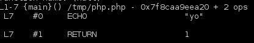
Notice that those functions don't compute userland-based. For example :
if function_exists('my_custom_function')) { }is not optimized, because you are very likely to have (or not) defined the 'my_custom_function' is another file. And remember, the PHP compiler and OPCache optimizer only works on a file basis. Even if you do that :
function my_custom_function() { }
if function_exists('my_custom_function')) { }That will not be optimized, because this is too unlikely to happen, the function call optimizer only works for internal types (internal functions, internal constants).
Another example with dirname() (PHP 7 only) :
if (dirname(__FILE__) == '/tmp') {
echo 'yo';
}Not optimized :
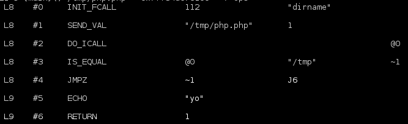
Optimized :
Again, strlen() is optimized in PHP 7. If we chain them together, we obviously meet a nice optimization. Like this :
if (strlen(dirname(__FILE__)) == 4) {
echo "yes";
} else {
echo "no";
}Not optimized :
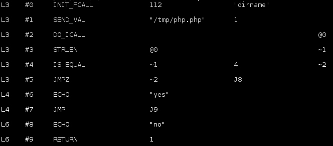
Optimized :
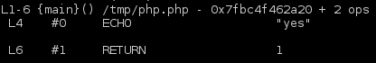
For the example above, you can notice that every statement have been computed at compile/optimization time, and then OPCache optimizer trashed all the 'false' branch (assuming obviously that the 'true' part was chosen).
Transtyping#
OPCache optimizer may switch your IS_CONST operand types, when it knows runtime will have to transtype them. That effectively saves some CPU cycles at runtime :
$a = 8;
$c = $a + "42";
echo $c;Classical compilation :
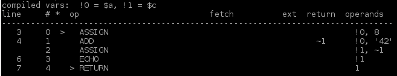
Optimized compilation :
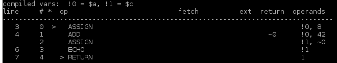
Look at the second operand true type of ZEND_ADD operation : it has switched from a string to an int. The optimizer did the job of transtyping the argument type for the math add operation. If it had not : the runtime VM would have done it again, and again, and again as the code is run again, and again, and again. This saves some CPU cycles involved in the transtyping operation.
Here is the OPCache optimizer code that does such a job :
if (ZEND_OPTIMIZER_PASS_2 & OPTIMIZATION_LEVEL) {
zend_op *opline;
zend_op *end = op_array->opcodes + op_array->last;
opline = op_array->opcodes;
while (opline < end) {
switch (opline->opcode) {
case ZEND_ADD:
case ZEND_SUB:
case ZEND_MUL:
case ZEND_DIV:
if (ZEND_OP1_TYPE(opline) == IS_CONST) {
if (ZEND_OP1_LITERAL(opline).type == IS_STRING) {
convert_scalar_to_number(&ZEND_OP1_LITERAL(opline) TSRMLS_CC);
}
}
/* break missing *intentionally* - the assign_op's may only optimize op2 */
case ZEND_ASSIGN_ADD:
case ZEND_ASSIGN_SUB:
case ZEND_ASSIGN_MUL:
case ZEND_ASSIGN_DIV:
if (opline->extended_value != 0) {
/* object tristate op - don't attempt to optimize it! */
break;
}
if (ZEND_OP2_TYPE(opline) == IS_CONST) {
if (ZEND_OP2_LITERAL(opline).type == IS_STRING) {
convert_scalar_to_number(&ZEND_OP2_LITERAL(opline) TSRMLS_CC);
}
}
break;
/* ... ... */You should note however, that such optimization has been merged into the PHP 7 compiler. That means that even with OPCache disabled (or optimizations disabled), PHP 7 compiler already performs such an optimization, as well as many more that were not performed by the PHP 5 compiler.
A little bit more silly, but adding two IS_CONST expressions, the result can then be computed at compile time, something the PHP compiler does not do by default in PHP 5, OPCache optimizer is needed :
$a = 4 + "33";
echo $a;Classical compilation :
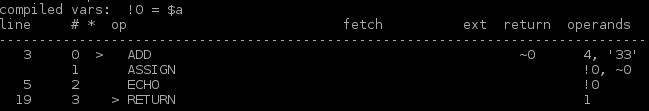
Optimized compilation :
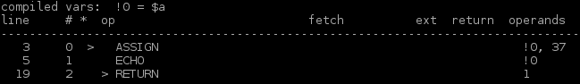
The optimizer computed the maths for 4 + 33, and erased the ZEND_ADD operation to be run by replacing it directly by the result. This saves again some CPU at runtime, as the VM executor now has less job to do. Here again, this is done in PHP 7 by the compiler, whereas in PHP 5 you would need OPCache optimizer to do that.
Optimized OPCodes substitution#
Now let's dive deeper into OPCodes. Sometimes (rarely), it is possible to substitue a following of OPCodes by other ones, more optimized. Look at that :
$i = "foo";
$i = $i + 42;
echo $i;Classical compilation :
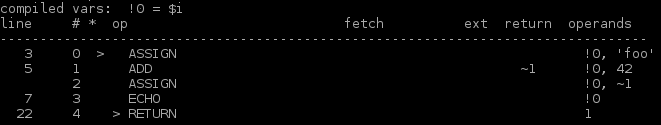
Optimized compilation :
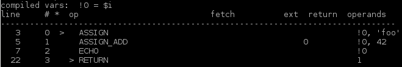
Here, our knowledge of the Zend VM executor leads us to substitue a ZEND_ADD plus a ZEND_ASSIGN, into a ZEND_ASSIGN_ADD, usually involved in statements such as $i+=3;
ZEND_ASSIGN_ADD is more optimized, it is one OPCode instead of two (which usually is better, but not every time)
On the same subject :
$j = 4;
$j++;
echo $j;Classical compilation :
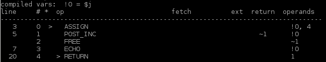
Optimized compilation :
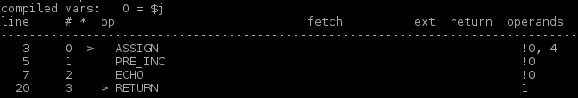
Here, OPCache optimizer replaced the $i++ by a ++$i statement, because it had the same meaning in this piece of code. ZEND_POST_INC is not very nice OPCode, because it must read the value, return it as-is, but increment a temporary value in memory, whereas ZEND_PRE_INC plays with the value itself, and reads it, increments it and returns it (this is just the PRE vs POST incrementation difference).
Because the intermediate value returned by ZEND_POST_INC is not used in the script above, the compiler must issue a ZEND_FREE OPCode, to free it from memory. OPCache optimizer turns the structure into a ZEND_PRE_INC, and removes the useless ZEND_FREE : less job to figure out at runtime.
Constant substitution and precomputing#
What about PHP constants ? They are more complex that what you think (much more in fact). So some optimizations that may seems obvious actually don't happen for many reasons, but let's see the actual ones :
const FOO = "bar";
echo FOO;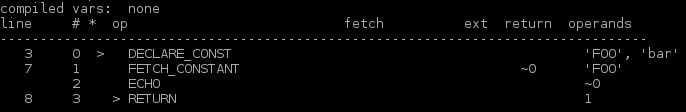
Optimized compilation :
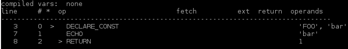
This is part of temporary variables optimizations, as we can see, here, once again, one OPCode have been trashed, the result of constant reading is directly figured out at compile time, into the optimizer, and the runtime will have less work to do.
Also, that ugly define() function can be replaced by a const statement, if its argument is constant :
define('FOO', 'bar');
echo FOO;The non optimized OPCodes from this little script are horrible in term of performance :
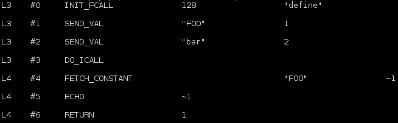
Optimized, is as expected :
define() is ugly, because it declares a constant but runs such a job at runtime, issuing a function call (define() is really a function). This is very bad.
The const keyword leads to a DECLARE_CONST OPCode. More on that in my ZendVM article. Note that in PHP 7, define() may lead to a const construct into the compiler directly (no optimizer needed).
Multiple jump target resolution#
This is actually a little bit hard to detail, but as usual with a simple example, you'll understand.
This optimization is about jump targets in jump opcodes (there are several flavors of them). Everytime the VM must jump, a jump address is computed by the compiler and stored into the VM operand. A jump is the result of a decision when the VM meets a decision point.
There are lots of jumps into PHP scripts. if, switch, while, try, foreach, ?: ... are PHP statements making decision, if the decision is true : jump to branch A, if not, jump to branch B.
Such algorithms can be optimized if the jump target is itself a jump. The landing jump will then make the VM jump again, to a final landing jump. Multiple jump target resolution is about directly making the VM jump to the final target.
Something like that :
if ($a) {
goto a;
} else {
echo "no";
}
a:
echo "a";With classical compilation, we end up with such OPCodes :
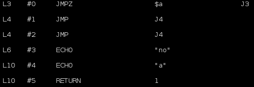
Translated (just read it) as : "if the result of $a evaluation is zero, jump to target 3, in target 3 echo "no". If not, continue, and meet a jump to 4. In 4, echo "a".
This is something like "Jump to 3, and in 3, jump to 4". Why not "jump to 4" directly then ? This is what the optimization does :
Here, we can translate that by "if $a evaluation is not zero, jump to 2 which echoes "a", if not, echo "no". Much simpler isn't it ?
This optimization shows true power in case of very complex scripts with many levels of decisions. Like having a while into an if, in which a goto is performed, leading to a switch which performs try-catches , etc...
Without this optimization, the overall OPArray may contain tons of OPCodes. Those will mainly be jumps, but probably jumps leading to jumps. Activating this optimization can sometimes (depend on the script) reduce significantely the number of OPCodes and ease the path the VM will branch ; leading in little gain of performances at runtime.
Concluding#
I did not show you all the work done by the optimizer. It can also optimize embeded loops by issuing "early returns" for example. Same for embed try catch blocks or switch-breaks. PHP function calls, which is a heavy process into the engine, is also optimized when possible.
The main difficulty in optimizer passes, is to never change the meaning of the script, and especially its control flow.
The main difficulty in optimizer passes, is to never change the meaning of the script, and especially its control flow. Bugs were found about this some time ago in OPCache, and it is all but cool when you come to see that PHP executor doesn't behave the way it should, having your little PHP script written under your eyes... In fact, the OPCodes generated have been altered by the optimizer and the engine just runs something which is wrong. Not cool.
Nowadays, OPCache optimizer is pretty stable but still under developpment for next PHP versions. It had to be patched in deep for PHP 7 as that latter changed many things in internal structures design, as well as having a PHP 7 compiler doing much more optimization job (the most trivial however) than PHP 5 used to do (PHP 5 compiler really does not optimize anything).
The PHP 7 compiler is much more efficient that PHP 5's. A lot of optimizations before performed in PHP 5 OPCache are now embeded directly into PHP 7's heart.
End#
We've seen that OPCache has finally become the standard recommanded PHP OPCode caching solution. We detailed how it works, not that hard to understand, but error prone yet. Nowadays, OPCache is very mature/stable and achieves its goal of boosting dramatically the overall performance of the PHP language by both canceling the time needed to compile a script and by optimizing the OPCodes resulting of the compilation. Shared memory is used for every process of a PHP pool to be able to access structures that have been added by others. Interned strings buffer is also managed in shared memory, leading to even more memory savings in a PHP pool of workers - typically using PHP-FPM SAPI.